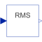

RootMeanSquareCalculate root mean square over period 1/f |

|
Diagram
{kind=link}
Information
This information is part of the Modelica Standard Library maintained by the Modelica Association.
This block calculates the root mean square of the input signal u over the given period 1/f, using the mean block.
Note: The output is updated after each period defined by 1/f.
Parameters (2)
| f |
Value: Type: Frequency (Hz) Description: Base frequency |
|---|---|
| x0 |
Value: 0 Type: Real Description: Start value of integrator state |
Connectors (2)
| u |
Type: RealInput Description: Connector of Real input signal |
|
|---|---|---|
| y |
Type: RealOutput Description: Connector of Real output signal |
Components (3)
| product |
Type: MultiProduct |
|
|---|---|---|
| mean |
Type: Mean |
|
| sqrt1 |
Type: Sqrt |
Used in Examples (11)
|
Modelica.Electrical.PowerConverters.Examples.ACDC.RectifierBridge2Pulse Two pulse Graetz diode bridge with resistive load |
|
|
Modelica.Electrical.PowerConverters.Examples.ACDC.RectifierBridge2Pulse Two pulse Graetz half controlled bridge with resistive load |
|
|
ThyristorBridge2Pulse_DC_Drive Modelica.Electrical.PowerConverters.Examples.ACDC.RectifierBridge2Pulse Two pulse Graetz thyristor bridge feeding a DC drive |
|
|
Modelica.Electrical.PowerConverters.Examples.ACDC.RectifierCenterTap2Pulse Two pulse diode rectifier with center tap with resistive load |
|
|
Modelica.Electrical.PowerConverters.Examples.ACDC.RectifierCenterTapmPulse 2*m pulse diode rectifier with center tap with resistive load |
|
|
Modelica.Electrical.PowerConverters.Examples.ACDC.RectifierBridge2mPulse 2*m pulse diode rectifier bridge with resistive load |
|
|
Modelica.Electrical.PowerConverters.Examples.ACDC.RectifierBridge2mPulse 2*m pulse half controlled rectifier bridge with resistive load |
|
|
ThyristorBridge2mPulse_DC_Drive Modelica.Electrical.PowerConverters.Examples.ACDC.RectifierBridge2mPulse 2*m pulse thyristor bridge feeding a DC drive |
|
|
Modelica.Electrical.PowerConverters.Examples.ACDC.RectifierCenterTap2mPulse 2*m pulse diode center tap rectifier with resistive load |
|
|
Modelica.Electrical.QuasiStationary.SinglePhase.Examples Rectifier example |
|
|
Modelica.Magnetic.QuasiStatic.FluxTubes.Examples Linear inductor with ferromagnetic core |
Used in Components (7)
|
Modelica.Blocks.Math Output the total harmonic distortion (THD) |
|
|
Modelica.Electrical.PowerConverters.Examples.ACDC.ExampleTemplates Template of single pulse rectifier |
|
|
Modelica.Electrical.PowerConverters.Examples.ACDC.ExampleTemplates Template of two pulse Graetz thyristor bridge |
|
|
Modelica.Electrical.PowerConverters.Examples.ACDC.ExampleTemplates Template of two pulse thyristor rectifier with center tap |
|
|
Modelica.Electrical.PowerConverters.Examples.ACDC.ExampleTemplates Template of 2*m pulse rectifier with center tap |
|
|
Modelica.Electrical.PowerConverters.Examples.ACDC.ExampleTemplates Template of 2*m pulse bridge thyristor rectifier |
|
|
Modelica.Electrical.PowerConverters.Examples.ACDC.ExampleTemplates Template of 2*m pulse thyristor rectifier with center tap |